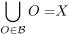
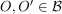
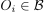
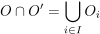
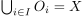
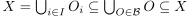
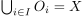
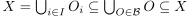

Bedingung für eine Basis der abgeschlossenen Mengen einer Topologie
1. Satz
Sei  eine Menge und
eine Menge und  eine Basis einer Topologie, so gilt:
eine Basis einer Topologie, so gilt:

1
Für  existiert eine Familie , so dass gilt

2
2. Beweis
 mit .
Daraus folgt 
mit .
Daraus folgt 
2.2. b)
folgt aus Abgeschlossenheit gegenüber Schnitten (Topologie) und der Definition einer Basis einer Topologie